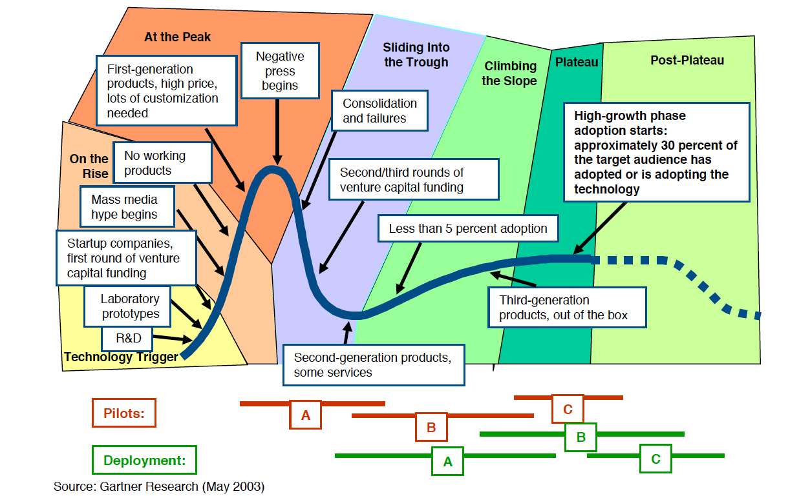
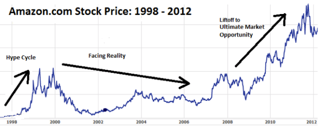
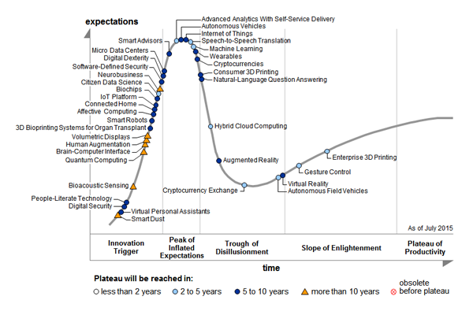
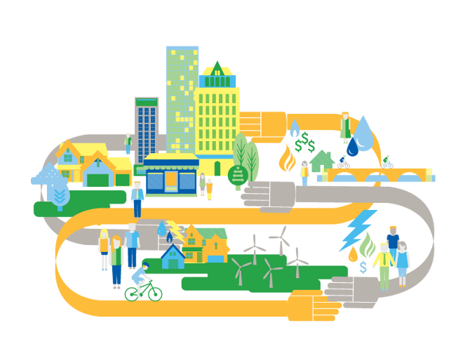

Starting with the industrial revolution of late 19th century, 'Technology' has evolved at rates which no one ever had imagined. Humans have advanced as a race and we still are inventing and discovering at an ever growing rate. This blog will focus contemporary technologies and the upcoming tech-revolutions. Though there are many parameters and methods to depict arrival and downfall of various technologies, the 'Gartner hype cycle' best depicts the life cycle of a technology.

How Do Hype Cycles Work?
Each Hype Cycle drills down into the five key phases of a technology's life cycle.
Technology Trigger: A potential technology breakthrough kicks things off. Early proof-of-concept stories and media interest trigger significant publicity. Often no usable products exist and commercial viability is unproven.
Peak of Inflated Expectations: Early publicity produces a number of success stories - often accompanied by scores of failures. Some companies take action; many do not.
Trough of Disillusionment: Interest wanes as experiments and implementations fail to deliver. Producers of the technology shake out or fail. Investments continue only if the surviving providers improve their products to the satisfaction of early adopters.
Slope of Enlightenment: More instances of how the technology can benefit the enterprise start to crystallize and become more widely understood. Second- and third-generation products appear from technology providers. More enterprises fund pilots; conservative companies remain cautious.
Plateau of Productivity: Mainstream adoption starts to take off. Criteria for assessing provider viability are more clearly defined. The technology's broad market applicability and relevance are clearly paying off.

Image source : Yahoo
The technology evolution graph in the Gartner cycle reflects on the financial status, reputation and trust-rating of a company. The Stock price of Amazon clearly follows the gartner hype cycle. Amazon as we all know is the world's leading e-commerce platform and IaaS/PaaS provider.
A key point to understand is that the time it takes for a technology to travel along the hype cycle is non-linear. In other words, the technology moves through the cycle in fits and starts. Technologies can become obsolete.
 Image source : Gartner
Gartner hype cycle for 2013
Image source : Gartner
Gartner hype cycle for 2013

Image source : Gartner
Gartner hype cycle for 2015
Embryonic Technologies
Smart dust, is 'dust' which is made 'smart' by adding an ability to sense surrounding data. A viable use of smart dust is in case of forest fires where smart dust could
be put into such fires to get accurate data regarding temperature, wind speed and direction, thus saving lives.
Or businesses could push smart dust into industrial systems to detect hazardous conditions in locations dangerous or impossible for human beings to visit.
People-Literate Technology (PLTs), which turns common language into computer smarts:
PLTs are computers that have minimal interface - human speech, and which have abilities to smartly parse the input speech data and provide output in form of action or an intelligent response.
PLTs will become the dominant model: by 2020, at least 40% of people will primarily interact with PLTs.
With Brain-Computer Interface, the user generates distinct brain patterns that are interpreted by the computer as commands to control an application or device.
Internet of everything : With tremendous wireless automation and fault handling possibilities, IoT clearly is something that will dominate the years to come.
Connected cars, connected homes, Smart grids, IoT platforms are the technologies that will revolutionize human race.
Its very clear that upcoming technologies mark the end of Digital marketing era and dawn of Digital automation.

Insights into future of technology
Internet of Things (Network of Intelligent objects around us coordinating activities) remains consistently almost at the Peak in both years.
It is thought of as the most disruptive technology in decades once widely deployed.
Autonomous vehicles, their placement is shown to have shifted from pre-peak 2014 to peak 2015 of the Hype Cycle.
According to Gartner, "while autonomous vehicles(like driverless cars) are still embryonic, this movement still represents a significant advancement,
with all major automotive companies putting autonomous vehicles on their near-term roadmaps".
Natural Language Process Question Answering, technology at peak of hype cycle in 2014, is on its slide down to the Trough.
Big data is no where to be seen the hype cycle 2015 where as last year it is shown to enter trough of disillusionment.
This may mean that the most talked about big data related technologies are now into practice and no more a hype.
Machine Learning made its first appearance on the chart this year, but already past the peak of inflated expectations and now takes the place of Big Data.
Digital Humanism : Wearables and the Internet of Things, the established trends are at the top of the "peak of inflated expectations" on the cycle, along with machine learning and advanced analytics.
All those trends are expected to plateau in between two and five years.
Citizen Data Scientist: Gartner this new class of Citizen Data Science and is shown in 2015 but not in 2014 and is expecting to reach plateau
in 2-5 years in the innovation trigger region.
Gartner research director Alexander Linden suggests cultivating "citizen data scientists" - people on the business side that may have some data skills,
possibly from a math or even social science degree - and putting them to work exploring and analyzing data.
Bio-informatics and Bio-computing : These are among the disruptive upcoming technologies and are said to have potential to make revolutionary changes in society when developed. They are currently in innovation trigger zone.
Enterprise 3D printing and gesture control technologies are heading for the plateau fast but are currently placed in the "slope of enlightenment".
Data security which is rather a critical discussion today seems to be surprisingly less of a hype and is shown as "Digital Security" in pre-peak and close to trigger region of the hype cycle.
Quantified self and related terms find no mention in 2015 hype cycle. This is mainly because of inability of these technologies to evolve and create an impact on the society independently.
These tech have merged with other technologies and they already are commonplace now.